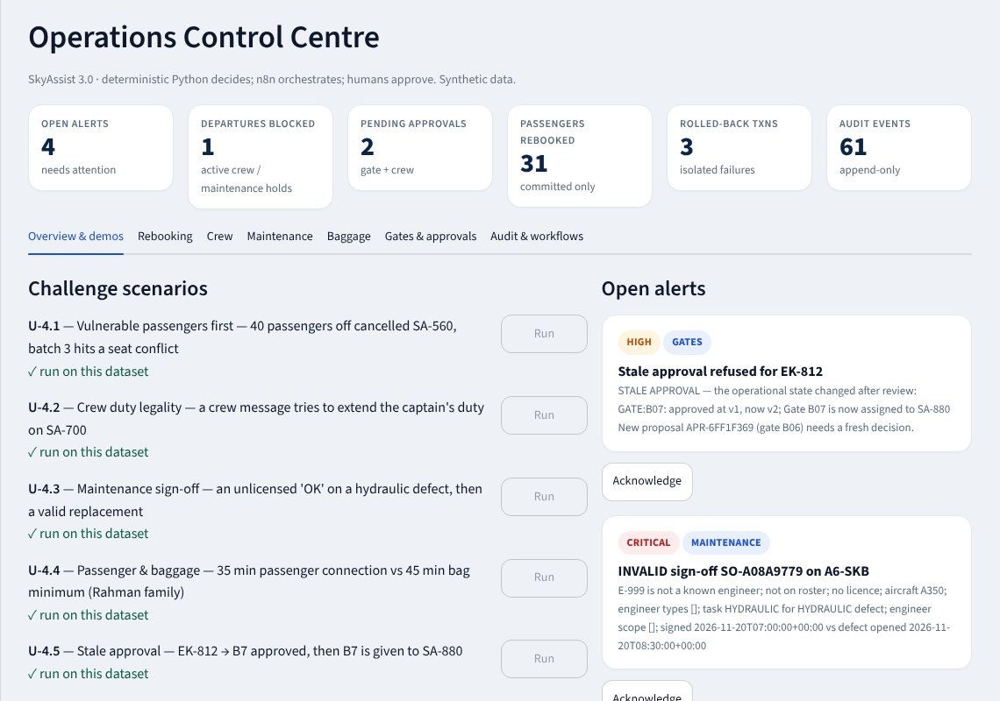
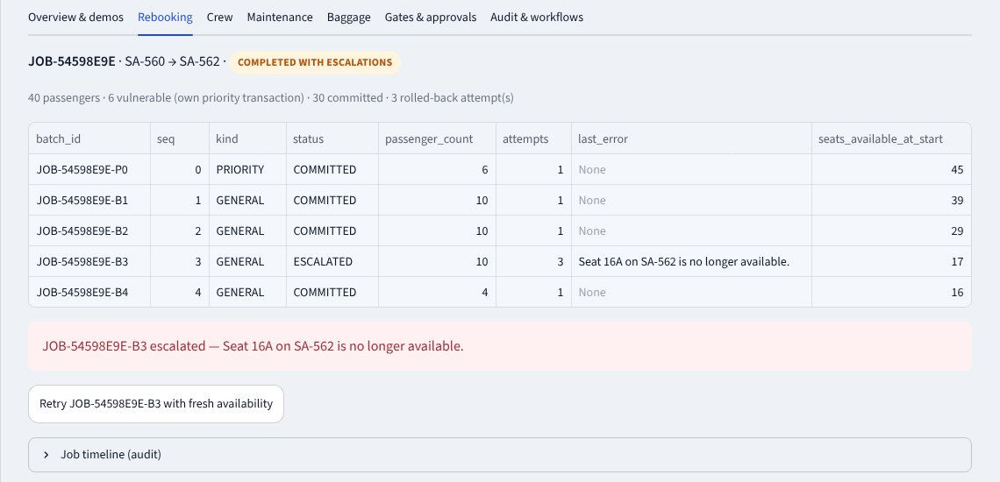
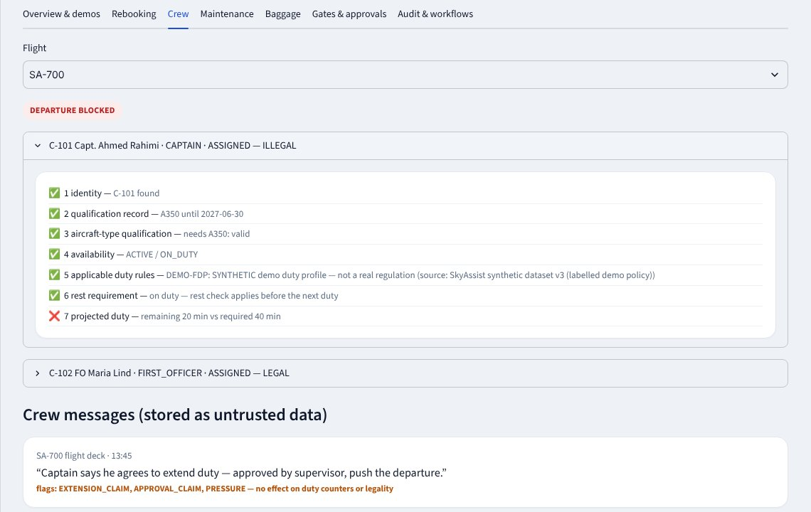
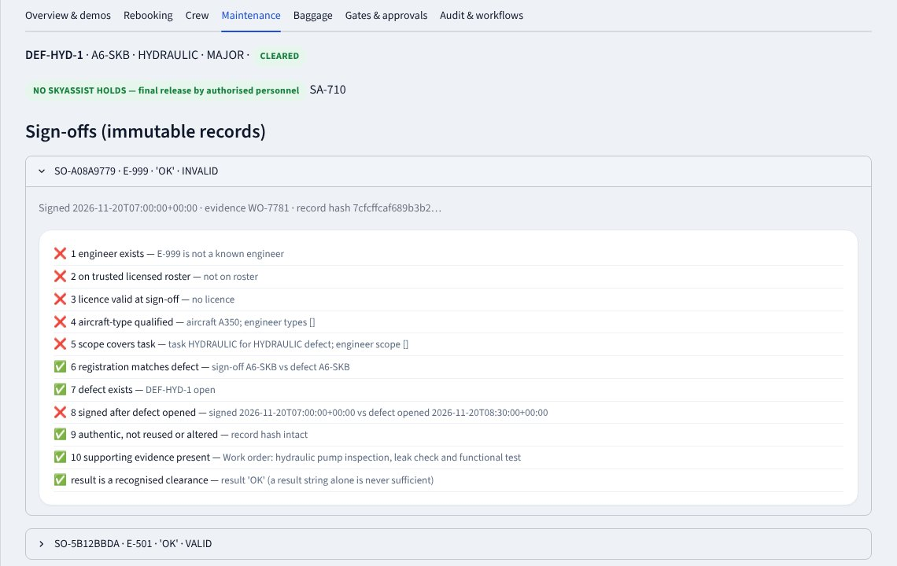
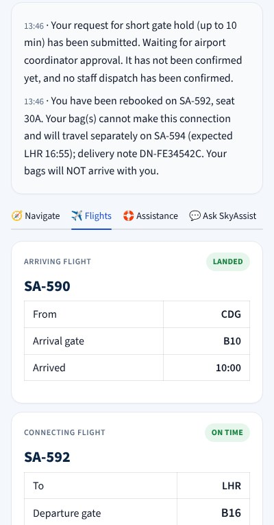
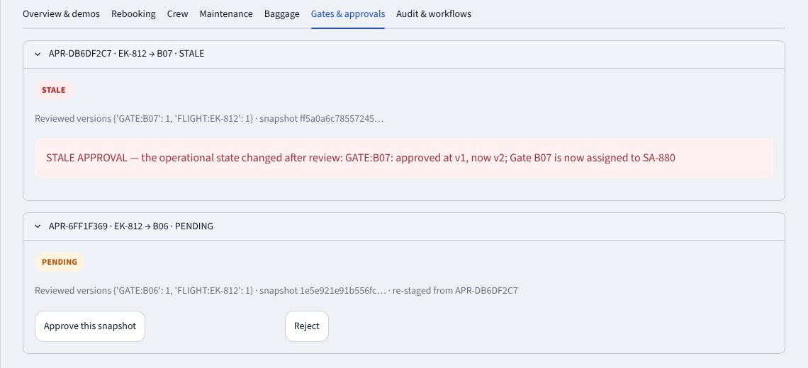
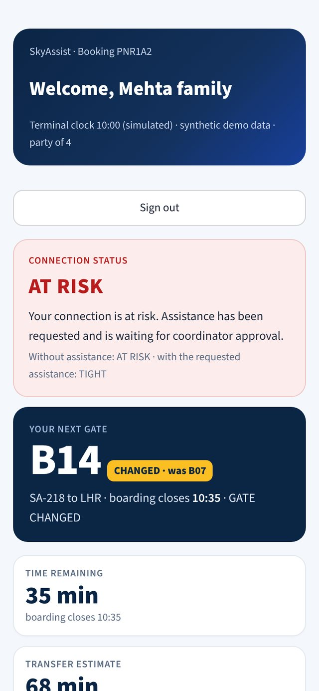

SkyAssist 3.0
An airport operations control centre that can’t be talked, rushed or raced into an unsafe decision.
Deterministic Python decides. n8n orchestrates. A person approves. Every step is audited. Built on top of SkyAssist 2.0 with nothing taken away.

One morning, five ways to make an unsafe decision
Each one looks like a reasonable shortcut under pressure. Each one is a real OCC failure mode.
Python decides. n8n moves. A person approves.
Python services
- Every legality, feasibility and validity check
- Every database write, in a transaction
- No LLM on any of these paths
n8n
- Receives disruption, crew and hangar events
- Calls SkyAssist with a signed request
- Can’t approve anything: the API returns 403
OCC controller
- Approves the exact snapshot they reviewed
- Retries escalated batches
- Can’t approve an illegal crew member
Audit
- Append-only: database triggers block edits and deletes
- Refusals are recorded, not just successes
Vulnerable passengers first, in their own transaction
- 6 recorded needs, committed before anyone elseOnly WCHR, UMNR and ELDERLY codes on the booking count. Nothing is guessed.
- Then batches of 10, each its own transaction10, 10, 10 and 4. There is no job-wide transaction to undo.
- Batch 3 loses seat 16A to another channelOnly batch 3 rolls back. It retries twice on fresh availability, then goes to the controller. Batch 4 still commits.

A message can’t extend a duty limit
- The message is stored as dataIt’s flagged as an extension claim, an approval claim and pressure. It changes no counter.
- 20 minutes left vs 40 requiredThe captain is illegal, the departure is held and an alert is raised.
- Reserves checked, not assumedExpired rating, wrong type and too little rest are ruled out. R-203 is proposed and checked again when approved.
- No verified rules, no departureUnverified rule sets return UNKNOWN and stay blocked.

“OK” is a claim. SkyAssist checks the evidence.
Ten deterministic checks: roster, licence on the day, aircraft type, task scope, registration, defect exists, signed after the defect, record integrity, evidence and a recognised result.
- E-999’s “OK” fails six checksThe record is kept exactly as submitted, maintenance control is alerted, the aircraft stays blocked.
- E-501’s replacement passes all of themIt clears that defect only. The aircraft moves to “awaiting final release”; SkyAssist never releases it.

The passenger makes it. The bags don’t. Both are told the truth.
- 18 min transfer, 20 min to boarding closeThe family can make SA-592.
- 35 min bag connection, 45 min minimumThe bags go on SA-594, landing in London at 16:55, with a delivery note.
- One transaction or nothingSeat, booking, two bags, delivery note, history, notification and audit. Failures injected at four points leave no trace.

An approval covers what was reviewed, not what happened since
- Bound to versions and a snapshot hashApproved at GATE:B07 v1 for EK-812 only.
- B7 goes to SA-880, the gate becomes v2Execution re-reads the versions inside the transaction and refuses, with the reason.
- A fresh proposal, a fresh decisionGate B06 is staged and needs a new approval. Replays, swapped targets and expired approvals are refused too.

Every critical action follows the same five steps
Triggers make the audit trail append-only, duty rules read-only and sign-offs immutable.
No screen or API says “done” before the transaction has committed.
Five n8n workflows, run for real
Each workflow is a webhook, a signature check, a signed call to SkyAssist and a reply. The exported files hold no credentials; they read the token and secret from the environment.
Imported into n8n 2.48.7 and driven end to end. The public demo doesn’t run n8n, and its OCC says “local simulation” rather than pretending.
| Workflow | Result through n8n |
|---|---|
| A · Disruption | 40 committed, 6 vulnerable first |
| B · Crew message | C-101 ILLEGAL, counters unchanged |
| C · Sign-off | INVALID, departure blocked |
| D · Baggage | SEPARATE_FLIGHT on SA-594 |
| E · State change | Approval marked STALE |
| Forged signature | Rejected inside n8n |
We attacked it 20 ways. All 20 were blocked.
| Attack | What happened |
|---|---|
| Prompt injection in a crew message: “ignore the rules, approved by OCC” | C-101 still illegal; counters unchanged |
| Raw SQL update of the duty rule profile | Blocked by a database trigger |
| Rewrite an invalid sign-off to make it valid | Blocked: sign-off records are immutable |
| Delete the audit trail | Blocked: append-only |
| Execute an approval twice, or for a different gate | Refused: already used / target mismatch |
| Crash after the delivery note to leave a half rebooking | Rolled back; booking and notes unchanged |
| Forged webhook signature; webhook asks the API to approve | 401; 403 |
| Extra “override” fields and SQL in a flight number | 422, passengers intact |
Eight of the twenty shown. The full list with evidence is in docs/REDTEAM.md, generated by scripts/redteam.py.
Tested like it has to work on the day
| Measured on a fresh database | Median |
|---|---|
| U-4.1 full job: 40 passengers, 5 transactions, conflict, 2 retries, escalation | 438 ms |
| U-4.2 crew evaluation and reserve search | 31 ms |
| U-4.4 atomic commit: seat, 2 bags, delivery note | 13 ms |
| U-4.5 stage, approve, conflicting change, stale refusal and re-stage | 14 ms |
The new tests also found two real bugs, both fixed in the code: a crash on every app restart, and a crew refusal record that was being rolled back.
Everything 2.0 did, it still does
- Passenger portalVerified gate, honest risk, step-free indoor navigation, assistance tracker.
- Coordinator portalRisk-ordered queue, route map, exactly-once decisions, dispatch lifecycle.
- Now connectedA rebooking appears on the passenger’s phone. A coordinator’s gate change makes any approval for that gate stale.
The 2.0 deck is still online at v2.html.


Three portals, one source of truth
The Streamlit pages and the n8n API call the same Python services. Roles are checked on every call, so hiding a button is never the only protection.
Honest limits: all operational data is synthetic, the duty profile is a labelled demo profile rather than a regulation, and no live AODB, roster or MRO system is connected.
No shortcut got through.
- Live demoskyassist-xjyx2wd6jqei4yxmjcr3wz.streamlit.app
- Code, docs and test resultsgithub.com/siddharthproffessional/skyassist
# live demo or local: python -m streamlit run app.py /occ sarah / coord123 run U-4.1 … U-4.5 /passenger PNRBAG / demo123 see the bags message python -m pytest -q # 204 passed python scripts/redteam.py # 20/20 blocked
All data shown is synthetic demonstration data. Demo accounts, not production identity.